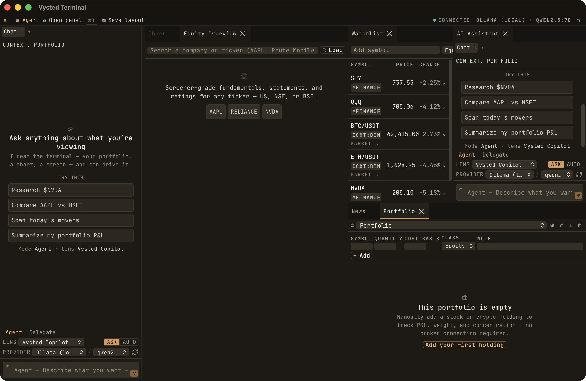

A prior session claimed the cockpit was "verified on real pixels." That was wrong — it had
captured a stale artifact and the new design was never confirmed rendering.
This sheet corrects the record with reliable evidence: every image below is captured from the
Tauri window buffer (Quartz CGWindowListCreateImage, occlusion-
independent — not screencapture -R, which grabs whatever is on top), of a
fresh production .app that embeds the current source.
target/debug/bundle/macos/Vysted Terminal.app (a prior tauri build)
embedded static export out/ dated Jun 5 (pre-rebuild)
the OLD interface (R5 was already dark warm-graphite — which is how the prior session was fooled)
tauri dev raw binary
localhost:3000 (new code)
the blank WHITE window (never isolated/painted; both windows were 1280×832 at the same origin)
So the committed OpenCode rebuild existed only in source + the dev server; no built
artifact carried it. After a full clean slate (all windows/sidecars/dev-servers/caffeinate
killed; out/, .next/, stale .app deleted), the new code
was rebuilt and proven below.
Root cause of the white render — and the fix
Next 16 defaults next build to Turbopack, whose
URL-encoded chunk filenames the Tauri WKWebView asset loader cannot fetch → blank. The dev
script already opted out (next dev --webpack); the build script did not.
Fix (committed dd08807):"build": "next build --webpack"
so the static export emits plain-hash chunks the webview can load.
(tauri.conf.json untouched — the change is in the package.json build script only.)
Confirmed first in real Chromium, then in the .app on real window-buffer pixels.
Proof — captured from the real Tauri .app window buffer

Full cockpit — the NEW design proven
Monospace across every role — headlines, panel titles, prose, data (JetBrains Mono), not Inter-sans, not serif.
Sharp 0px containers; warm-graphite #110f0c; single muted amber; no glow/shadow; no cool/blue tint.
Full drive-through: load AAPL, ⌘K, open + click every panel (Notes, brief, screener, analyst, sec, quant, macro, backtest, settings…).
Per-surface real-pixel defect hunt + fixes.
Blocked here only by OS input automation: Accessibility is denied for Cursor (osascript −1719 / cliclick), and the production .app has no MCP bridge.
Relaunch (fresh window): build → pnpm build (now webpack) then pnpm tauri build --debug,
and open "src-tauri/target/debug/bundle/macos/Vysted Terminal.app". For an
autonomous real-pixel drive-through next session, enable Cursor in
System Settings → Privacy & Security → Accessibility first.